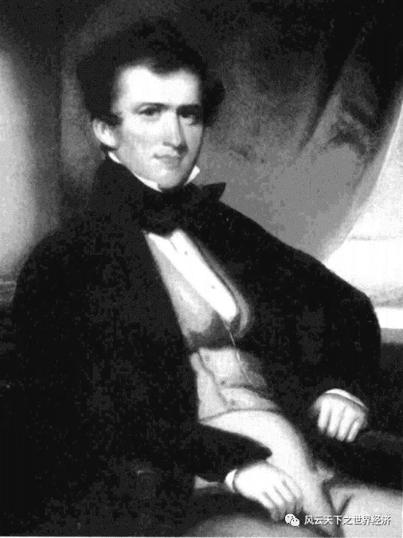
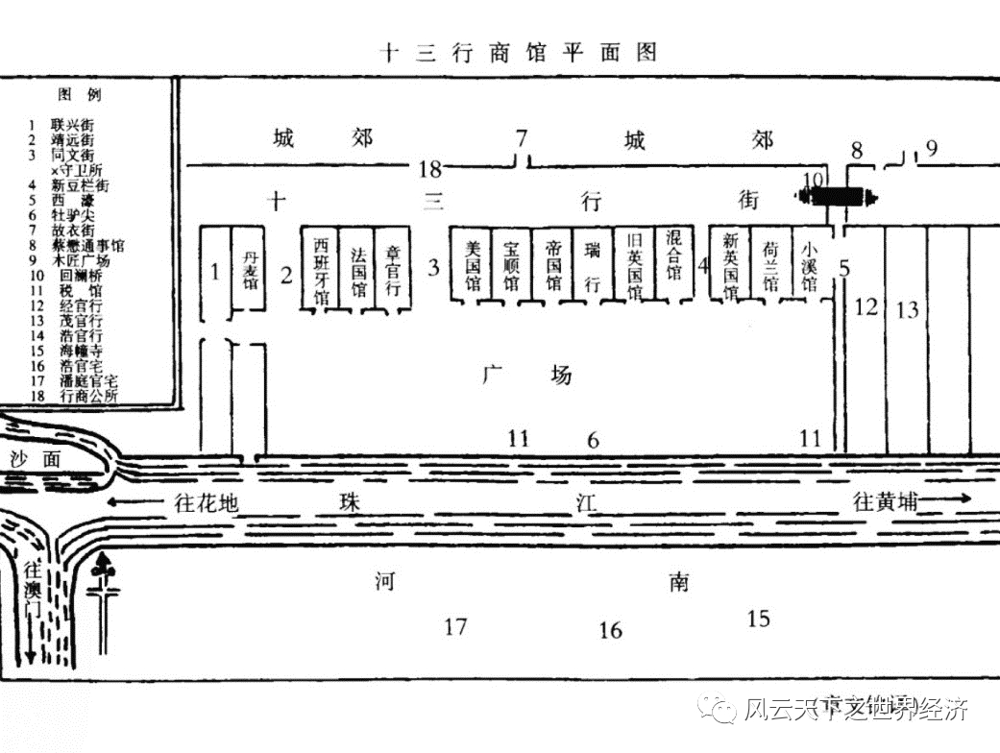
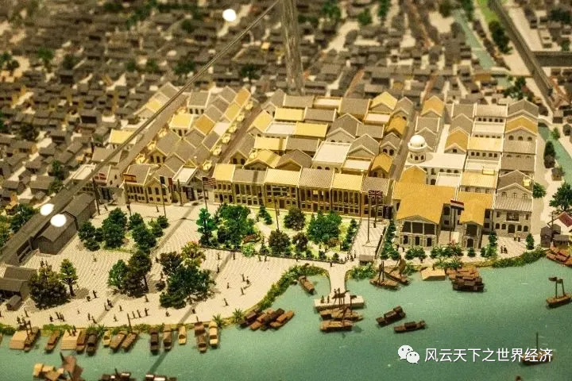
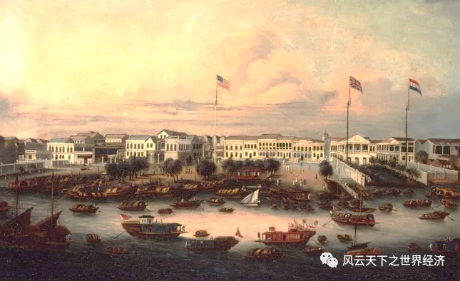

日光落在平静的海面上，水波烁烁，浮光映着船帆。一头鲸鱼从水下跃起，溅起白色的浪花。它短小的胸鳍却倏忽变得窄长，嘴部前突呈喙状，喙的末尾下钩，恍然是一只巨大的信天翁。它乘着风飞到半空，在船的上方盘桓。霎时，方圆几百里的信天翁都往这里聚集，遮天蔽日。这一方天地变得昏暗，却诡异地宁静，连风声都没有。但浪如山高，船身猛烈地摇晃，前桅和后桅的帆碎成破布条、正在狂舞。船副们的大声呼喊和水手们的应答之声浑成一片。青年亨特张了张嘴，发现自己发不出声音，于是仔细辨别着周围人发出的音节。他们在说什么？在说——“落花满天蔽月光，借一杯附荐……”
亨特睁开眼睛，看见用茜红色薄纱做的蚊帐，头隐隐作痛，他轻轻拍了拍。昨天，他跟着罗素先生，去赴潘启官先生举办的“筷子宴”。他们齐聚在那位于泮塘的美丽住宅，宴会上尽是珍馐美味。亨特多喝了几杯大米酿造的“三苏”，回到商馆后就昏昏沉沉地睡下。现在，他打量着窗外的天色，大概是中午了。

青年时代的亨特
耳边的声音不绝。他下了床，走到窗前，望向楼下的空地。这个时间点，广场上人来人往，卖曲本的中年男人在用假声高唱一段词，从而招徕顾客。他正要唱完第二句，拖着长长的颤音。亨特是商馆里少数几个懂得中文的洋人之一，但显然还不能理解这些晦涩的字眼。他的眼睛漫无目的地巡睃，瞥见零星几个驻足在旁的洋人。他们边听边笑着交头接耳，看起来兴致颇高。
眼前的场景惬意宁和，让亨特长舒了一口气，把怪异的梦境定为四年间海上行程的遗存物。那并不是什么值得回忆的经历：一望无垠的海面吞吐着日月，也吞噬了一位神经错乱的厨子。除了偶尔从水面跃起的鲸鱼和天边飞翔的信天翁，他很难看到其他可以被称为“生物”的存在。所幸，他已经入职瑞行二号，成功在广州这块被称作“十三行商馆”的地方住了下来。
说起来，半个月前，他刚入住的时候，还常被当地的官员们提醒着自己的“暂住”有赖于“天朝对远来夷人的仁慈”。他们告诫亨特各种各样的规矩，比如每月只有固定的三个日子可以离开商馆，最远只能到达商馆广场前的牡驴尖等等。然而没过几天，亨特就发现这些针对洋人的规章只是一纸空文。只要他高兴，就可以出去散步。就比如现在，他想去广场上透透气。

广州十三行商馆平面
午后的阳光漏过枝叶，碎影斑驳于商馆肌体。面前的广场人头攒动，亨特信步加入。咸橄榄、花生、糕点、粥……贩卖吃食的摊位数目独占鳌头，当然也不乏修补旧鞋的鞋匠、整治旧衣的裁缝、翻修油纸伞的妇人、编制细藤条的大爷……亨特在卖茶水的摊位找了个位置坐下。
泡茶的茶叶是有讲究的，广州的有钱人家会用瓦罐将茶叶封存两三年，从而减少新茶的苦辣味道。沿街叫卖的茶水，当然比不上有钱人家的香醇可口，但足以解渴。此外，这里实在没有其他更烈性的饮料了。在广州的街头，醉汉是很稀奇的。片刻后，一杯热茶下肚，他学着邻桌的老大爷“哈”了一声，再心满意足地放下茶杯。
一抬眼，亨特望见不远处一位年轻的小伙子正在变戏法，眼下正在展示“三仙归洞”。看客群里惊叹声此起彼伏，人们高声吹嘘着这位年轻人是如何巧施“仙术”，让三个球自如穿过碗壁的。
亨特还想再四处看看，果然有了新发现——树荫中坐着一个目光茫然的大叔，只穿件勉强遮住腰部的袍子，手中一把葵扇悠哉游哉地晃着。这幅景象，和其他忙碌的商贩、涌动的行人相映成趣。
“亨特！亨特！”罗素先生隔着人群喊。
亨特从位置上站起来，向声音来源方向挥手：“先生，我在这！”
这位温和敦厚的旗昌洋行主任快步走过来，在亨特面前站定，拍了拍这位年轻人的肩膀，举止温文尔雅：“嘿！小伙子，看来你睡了个好觉！今天下午清闲，我们租个船到江上游览一下吧，正好谈谈簿记的工作。”
“乐意之至。”亨特回道，又指了指去牡驴尖的路，说：“我们是要在出发吗？但……”
“当然！”罗素先生看了一眼那边拥攘的摊位和人群，说：“我已经通知了老汤姆，他会叫人来清理广场的。照理说来，这些中国人占据广场本身就是不‘合法’的……”话音未落，同文街和美国馆的拐角处窜出了巡役，他们把手中的鞭子挥得猎猎作响。罗素先生接着说：“瞧，他们来得真快。我们最好找个清静的地方站着。”于是领着亨特往旁边走。
小商贩们急忙拿起摊位上最贵重的商品，多数是抱着几个坛坛罐罐一溜烟儿就没了影。当然也有忙着收拾茶杯和腌制食品，不提防肩上就挨上一鞭的。刚还在纳凉的大叔跑得不快，又一时手滑落下了扇子，却瞧准了空隙，腾地从地上拾了起来，再接着跑远了。卖曲本的中年男人张开双臂，一股脑把摊在地上的曲本拢在怀里。结果刚起身就掉了两本在地上，还被跑过的人一脚踩坏了。来不及跺足，从另一边又撞过来一个鲁莽的年轻人，连带着他旋转了大半圈，又散落了两本。刚想弯腰去捡，背上就挨了一鞭子。顾不上疼，也没了捡曲本的心思，抱紧了怀里的，融进了四散的人群。
亨特第一回见这样的场面，颇有些沉吟。倒是罗素先生习以为常，扭头和他有一搭没一搭地闲聊起来。

清代广州商馆区沙盘
总之，广场很快恢复了安静空旷。
罗素领着亨特往牡驴尖走，登上了一艘小船。船夫划着浆、扯着帆、摇着橹，小船悠悠地开启了行程。他有意让亨特更加熟悉这边的风土人情，一边传授些记账的秘诀，一边指引他看周围的船艇。
一眼望去，这些各式各样的船艇几乎盖满江面。大多数船艇是一个家庭的唯一住所，这样的人家几乎从不在岸上落脚。他们在船上做着各种营生：卖故衣、饰物、食品，做木匠、工匠、鞋匠、剃头匠、裁缝，还有算命先生、应急郎中……他们生活清贫，穿得很朴素，饮食也稍显寡淡，却勤劳和善，看起来自得其乐。珠江两岸边常有挤满乘客的大船启航或靠岸。有些是官船，数十枝桨上插着各色旗子，旗面写着船艇所属地方和所载官员的官衔。有些是往来于行商货栈的驳船和货船。而走内河和运河的船艇在江面上格外神气，清漆油过的舱面和船舷锃亮，舱面还要比水面高出好几英尺。周边的产茶地将茶叶运进广东省内的转运点后，再由这些船运来广州。此外，还有装饰清雅秀丽的花艇，靠着江岸鳞次栉比。花艇的上盖嵌着玲珑木雕，船厢两侧装着玻璃窗，艇内不时传出宴酣声与丝竹声。
天色渐晚，一条装备武器的手划快艇从外洋顺风驶进，果断而迅捷。罗素指着它，让亨特也看看这艘船吃水的深度。在亨特疑惑的目光里，悄声告诉他这艘船里载的是鸦片，价值好几万元。亨特想起中国皇帝的圣旨和广州当局的文告，上面都明令禁止这种贸易的存在，参与贩卖者甚至将被“斩首”。他沉吟了一会儿，最终什么都没问。

约1830年的广州商馆
随着夜幕低垂，其他船民把船艇靠近江岸两边。罗素先生示意身边的船夫返航。小船靠岸时，这位矫健的船夫把长竹竿深深地插进河底的淤泥里，于是船稳稳当当地停住。
上岸后，亨特回望江面，每只艇的艇首，都有人跪着、握着双手、虔诚地给海神和河神敬上香。香火星星点点，在漆黑的夜色中莹莹地亮着。这时，两岸边的灯笼被一个又一个点亮，柔和的光轻轻地浮在江面上。
罗素先生在给亨特做今天的总结，许久没听见少年的回应，这才意识到亨特被落在了后边。他温和地催促着，亨特回过神，抬腿往罗素先生跑去。
这是1829年4月，年少的亨特在广州的一隅，领略了这富可敌国的商业巨擘的风采。长达13年的广州十三行旅居生活正徐徐展开，眼前的平和繁荣似乎预示着这将是一段不错的生活经历。
当时的他从未想到，35年后，当他最后一次来到这里时，这里将完全变成废墟，甚至找不到两块叠在一起的石头。
后来，年迈的亨特执笔写下《广州番鬼录》和《旧中国杂记》，这才惊悟两国间横贯的森森兵刃与淋漓鲜血早有迹可循。而更久远的事，已埋泉下泥销骨的亨特，就无从得知了。
不过，东风起于青萍之末，得风气之先的广州大地上，有被山路和江海编织的经纬和勤劳朴实的“老广人”，舳舻千里，旌旗蔽空，物华天宝荟萃，白银珠玉积箱。200年前如此。200年后，自然也是如此。